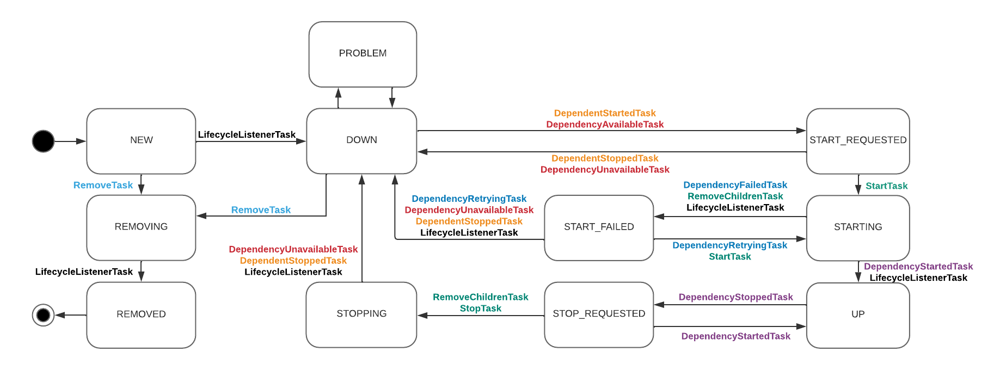
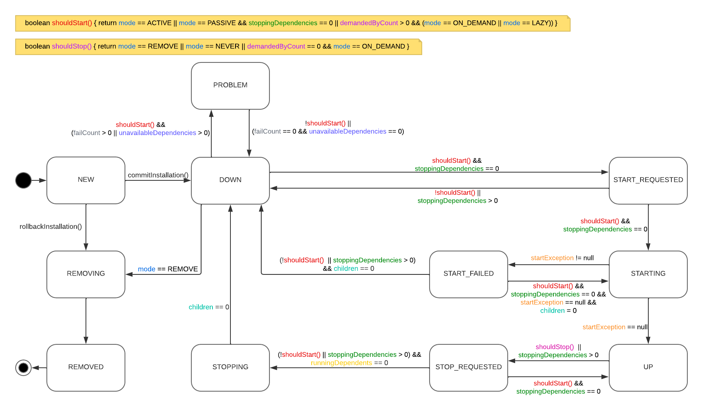

Package org.jboss.msc.service
The service container implementation itself. The service container is what coordinates the registry of services and
manages their installation and execution. To create a service container, see
ServiceContainer.Factory.create().
To create services, implement the Service interface.
Individual service instances are controlled using the ServiceController interface. Service controllers follow
this strict internal state machine (separated into two views for better illustration).
First view shows substates and tasks executed on every transition from one substate to another. Listener tasks are executed as last on every transition. 
Second view shows substates and conditions between them causing transition from one substate to another. The variables are what determine when a transition may occur; any time a variable is changed, the conditions are checked to see if a transition can occur.

Where mode variable may hold one of possible controller mode values.
-
Interface Summary Interface Description LifecycleContext A context object for lifecycle events.LifecycleListener A listener for service lifecycle events.Service<T> Deprecated. useServiceinstead.ServiceActivator A service activator which contributes services to a batch.ServiceActivatorContext Context provided to ServiceActivator instances at execution time.ServiceBuilder<T> Builder to configure service before installing it into the container.ServiceContainer A service container which manages a set of running services.ServiceContainer.TerminateListener A listener for notification of container shutdown.ServiceController<S> A controller for a single service instance.ServiceRegistry A service registry.ServiceTarget The target of ServiceBuilder installations.StartContext The start lifecycle context.StopContext The stop lifecycle context. -
Class Summary Class Description DelegatingServiceBuilder<T> A service builder which delegates to another service builder.DelegatingServiceContainer A delegating container for things which depend on a service container rather than a specific target or registry instance.DelegatingServiceController<S> A service controller which delegates to another service controller.DelegatingServiceRegistry A service registry which delegates to another service registry.DelegatingServiceTarget A service target which delegates to another service target.ServiceActivatorContextImpl A simple service activator context implementation.ServiceContainer.Factory The factory class for service containers.ServiceContainer.TerminateListener.Info Container shutdown information.ServiceName Service name class.StabilityMonitor Deprecated. Stability monitors are unreliable - do not use them.StabilityStatistics Deprecated. Stability monitors are unreliable - do not use them. -
Enum Summary Enum Description LifecycleEvent Service lifecycle events.ServiceController.Mode The controller mode for a service.ServiceController.State A possible state for a service controller. -
Exception Summary Exception Description CircularDependencyException Exception used to indicate there was a circular dependency discovered during resolution.DuplicateServiceException An exception which is thrown when the given service is already registered.ServiceNotFoundException Exception which is thrown when a required service is not found in the registry.ServiceRegistryException Base Exception class used for service registry issues.StartException A start exception, thrown when a service fails to start.